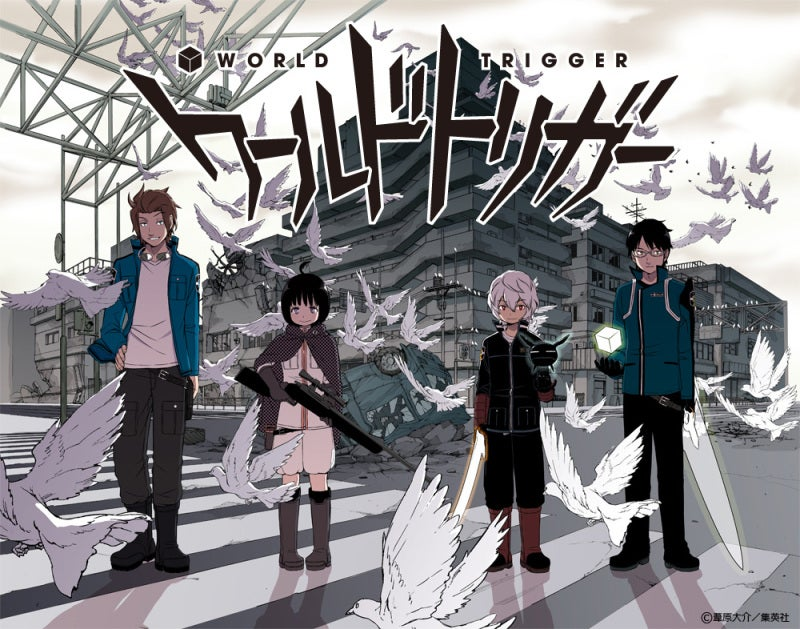

ワールドトリガー
これは「ワールドトリガー」という漫画です！僕が中学２年生のころからずっと好きな作品です！あらすじは異世界からの侵略者"近界民（ネイバー）"と、それに対抗する防衛機関"ボーダー"の戦いを描いたＳＦバトル漫画となっています。
主人公の一人である三雲修は

これは「ワールドトリガー」という漫画です！僕が中学２年生のころからずっと好きな作品です！あらすじは異世界からの侵略者"近界民（ネイバー）"と、それに対抗する防衛機関"ボーダー"の戦いを描いたＳＦバトル漫画となっています。
主人公の一人である三雲修は